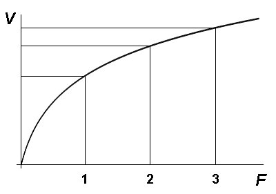
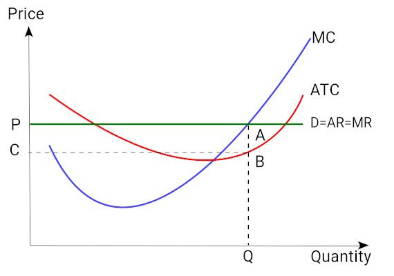
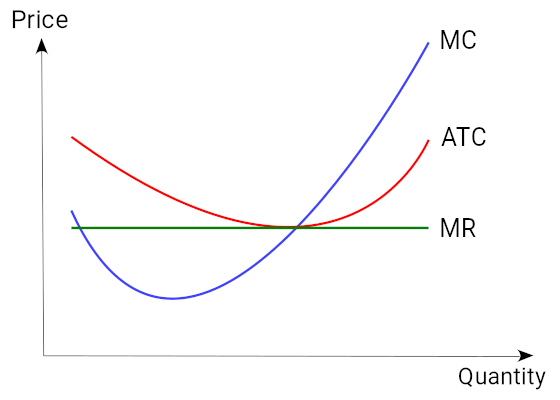
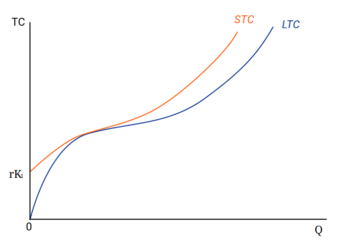
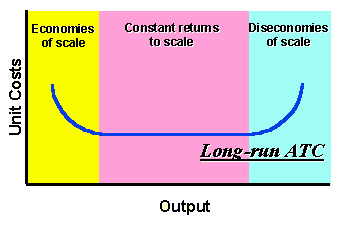
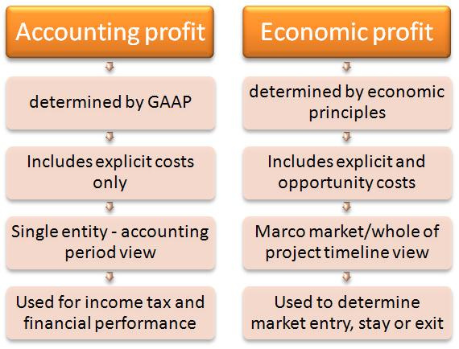

Table of Contents
9. Production
9.1. The Production Function
9.1.1. Defining the Production Function
9.1.2. The Law of Diminishing Returns
9.1.3. Inputs and Outputs of the Function
9.2. Production Cost
9.2.1. Types of Costs
9.2.2. Average and Marginal Cost
9.2.3. Short Run and Long Run Costs
9.2.4. Economies and Diseconomies of Scale
9.2.5. Economic Costs
9.3. Economic Profit
9.3.1. Difference Between Economic and Accounting Profit
9.3.2. Sources and Determinants of Profit
9. Production
9.1. The Production Function
9.1.1. Defining the Production Function
The production function relates the maximum amount of output that can be obtained from a given number of inputs.
Learning Objective
Define the production function
Key Points
- The production function describes a boundary or frontier representing the limit of output obtainable from each feasible combination of inputs.
- Firms use the production function to determine how much output they should produce given the price of a good, and what combination of inputs they should use to produce given the price of capital and labor.
- The production function also gives information about increasing or decreasing returns to scale and the marginal products of labor and capital.
Key Terms
- marginal cost
- The increase in cost that accompanies a unit increase in output; the partial derivative of the cost function with respect to output. Additional cost associated with producing one more unit of output.
- Production function
- Relates physical output of a production process to physical inputs or factors of production.
- output
- Production; quantity produced, created, or completed.
In economics, a production function relates physical output of a production process to physical inputs or factors of production. It is a mathematical function that relates the maximum amount of output that can be obtained from a given number of inputs - generally capital and labor. The production function, therefore, describes a boundary or frontier representing the limit of output obtainable from each feasible combination of inputs.
Firms use the production function to determine how much output they should produce given the price of a good, and what combination of inputs they should use to produce given the price of capital and labor (). When firms are deciding how much to produce they typically find that at high levels of production, their marginal costs begin increasing. This is also known as diminishing returns to scale - increasing the quantity of inputs creates a less-than-proportional increase in the quantity of output. If it weren't for diminishing returns to scale, supply could expand without limits without increasing the price of a good.
Manufacturing companies use their production function to determine the optimal combination of labor and capital to produce a certain amount of output.
Increasing marginal costs can be identified using the production function. If a firm has a production function Q=F(K,L) (that is, the quantity of output (Q) is some function of capital (K) and labor (L)), then if 2Q<F(2K,2L), the production function has increasing marginal costs and diminishing returns to scale. Similarly, if 2Q>F(2K,2L), there are increasing returns to scale, and if 2Q=F(2K,2L), there are constant returns to scale.
Examples of Common Production Functions
One very simple example of a production function might be Q=K+L, where Q is the quantity of output, K is the amount of capital, and L is the amount of labor used in production. This production function says that a firm can produce one unit of output for every unit of capital or labor it employs. From this production function we can see that this industry has constant returns to scale - that is, the amount of output will increase proportionally to any increase in the amount of inputs.
Another common production function is the Cobb-Douglas production function. One example of this type of function is Q=K0.5L0.5. This describes a firm that requires the least total number of inputs when the combination of inputs is relatively equal. For example, the firm could produce 25 units of output by using 25 units of capital and 25 of labor, or it could produce the same 25 units of output with 125 units of labor and only one unit of capital.
Finally, the Leontief production function applies to situations in which inputs must be used in fixed proportions; starting from those proportions, if usage of one input is increased without another being increased, output will not change. This production function is given by Q=Min(K,L). For example, a firm with five employees will produce five units of output as long as it has at least five units of capital.
9.1.2. The Law of Diminishing Returns
The law of diminishing returns states that adding more of one factor of production will at some point yield lower per-unit returns.
Learning Objective
Explain the Law of Diminishing Returns
Key Points
- One consequence of the law of diminishing returns is that producing one more unit of output will eventually cost increasingly more, due to inputs being used less and less effectively.
- The marginal cost curve will initially be downward sloping, representing added efficiency as production increases. If the law of diminishing returns holds, however, the marginal cost curve will eventually slope upward and continue to rise.
- The SRAC is typically U-shaped with its minimum at the point where it intersect the marginal cost curve. This is caused by the first increasing, and then decreasing, marginal returns to labor.
- The typical LRAC curve is also U-shaped, reflecting increasing returns of scale where negatively-sloped, constant returns to scale where horizontal and decreasing returns where positively sloped.
Key Terms
- returns to scale
- A term referring to changes in output resulting from a proportional change in all inputs (where all inputs increase by a constant factor).
- marginal cost
- The increase in cost that accompanies a unit increase in output; the partial derivative of the cost function with respect to output. Additional cost associated with producing one more unit of output.
In economics, diminishing returns (also called diminishing marginal returns) is the decrease in the marginal output of a production process as the amount of a single factor of production is increased, while the amounts of all other factors of production stay constant. The law of diminishing returns states that in all productive processes, adding more of one factor of production, while holding all others constant ("ceteris paribus"), will at some point yield lower per-unit returns . The law of diminishing returns does not imply that adding more of a factor will decrease the total production, a condition known as negative returns, though in fact this is common.
{kind=link}
As a factor of production (F) increases, the resulting gain in the volume of output (V) gets smaller and smaller.
For example, the use of fertilizer improves crop production on farms and in gardens; but at some point, adding more and more fertilizer improves the yield less per unit of fertilizer, and excessive quantities can even reduce the yield. A common sort of example is adding more workers to a job, such as assembling a car on a factory floor. At some point, adding more workers causes problems such as workers getting in each other's way or frequently finding themselves waiting for access to a part. In all of these processes, producing one more unit of output will eventually cost increasingly more, due to inputs being used less and less effectively.
This increase in the marginal cost of output as production increases can be graphed as the marginal cost curve, with quantity of output on the x axis and marginal cost on the y axis. For many firms, the marginal cost curve will initially be downward sloping, representing added efficiency as production increases. If the law of diminishing returns holds, however, the marginal cost curve will eventually slope upward and continue to rise, representing the higher and higher marginal costs associated with additional output.
The Law of Diminishing Returns and Average Cost
The average total cost of production is the total cost of producing all output divided by the number of units produced. For example, if the car factory can produce 20 cars at a total cost of \$200,000, the average cost of production is \$10,000. Average total cost is interpreted as the the cost of a typical unit of production. So in our example each of the 20 cars produced had a typical cost per unit of \$10,000. Average total cost can also be graphed with quantity of output on the x axis and average cost on the y-axis.
What will this average total cost curve look like? In the short run, a firm has a set amount of capital and can only increase or decrease production by hiring more or less labor. The fixed costs of capital are high, but the variable costs of labor are low, so costs increase more slowly than output as production increases. As long as the marginal cost of production is lower than the average total cost of production, the average cost is decreasing. However, as marginal costs increase due to the law of diminishing returns, the marginal cost of production will eventually be higher than the average total cost and the average cost will begin to increase. The short run average total cost curve (SRAC) will therefore be U-shaped for most firms .
{kind=link}
Both marginal cost and average cost are U-shaped due to first increasing, and then diminishing, returns. Average cost begins to increase where it intersects the marginal cost curve.
The long-run average cost curve (LRAC) depicts the cost per unit of output in the long run—that is, when all productive inputs' usage levels can be varied. The typical LRAC curve is also U-shaped but for different reasons: it reflects increasing returns to scale where negatively-sloped, constant returns to scale where horizontal, and decreasing returns (due to increases in factor prices) where positively sloped.
9.1.3. Inputs and Outputs of the Function
In the basic production function, inputs are typically capital and labor and output is whatever good the firm produces.
Learning Objective
Describe the inputs and outputs in a generalized production function
Key Points
- Capital refers to the material objects necessary for production. In the short run, economists assume that the level of capital is fixed.
- Labor refers to the human work that goes into production. Typically economists assume that labor is a variable factor of production.
- The marginal product of an input is the amount of output that is gained by using one additional unit of that input. It can be found by taking the derivative of the production function in terms of the relevant input.
Key Terms
- rental rate
- The price of capital.
- capital
- Already-produced durable goods available for use as a factor of production, such as steam shovels (equipment) and office buildings (structures).
- marginal product
- The extra output that can be produced by using one more unit of the input.
A production function relates the input of factors of production to the output of goods. In the basic production function inputs are typically capital and labor, though more expansive and complex production functions may include other variables such as land or natural resources. Output may be any consumer good produced by a firm. Cars, clothing, sandwiches, and toys are all examples of output.
Capital refers to the material objects necessary for production. Machinery, factory space, and tools are all types of capital. In the short run, economists assume that the level of capital is fixed - firms can't sell machinery the moment it's no longer needed, nor can they build a new factory and start producing goods there immediately. When looking at the production function in the short run, therefore, capital will be a constant rather than a variable. Although in reality a firm may own the capital that it uses, economists typically refer to the ongoing cost of employing capital as the rental rate because the opportunity cost of employing capital is the income that a firm could receive by
Capital equipment, like these motor graders, can vary in the long run but are fixed in the short run.
Labor refers to the human work that goes into production. Typically economists assume that labor is a variable factor of production; it can be increased or decreased in the short run in order to produce more or less output. The price of labor is the prevailing wage rate, since wages are the cost of hiring an additional unit of capital.
The marginal product of an input is the amount of output that is gained by using one additional unit of that input. It can be found by taking the derivative of the production function in terms of the relevant input. For example, if the production function is Q=3K+2L (where K represents units of capital and L represents units of labor), then the marginal product of capital is simply three; every additional unit of capital will produce an additional three units of output. Inputs are typically subject to the law of diminishing returns: as the amount of one factor of production increases, after a certain point the marginal product of that factor declines.
9.2. Production Cost
9.2.1. Types of Costs
Variable costs change according to the quantity of goods produced; fixed costs are independent of the quantity of goods being produced.
Learning Objective
Differentiate fixed costs and variable costs
Key Points
- Total cost is the sum of fixed and variable costs.
- Variable costs change according to the quantity of a good or service being produced. The amount of materials and labor that is needed for to make a good increases in direct proportion to the number of goods produced. The cost "varies" according to production.
- Fixed costs are independent of the quality of goods or services produced. Fixed costs (also referred to as overhead costs) tend to be time related costs including salaries or monthly rental fees.
- Fixed costs are only short term and do change over time. The long run is sufficient time of all short-run inputs that are fixed to become variable.
Key Terms
- fixed cost
- Business expenses that are not dependent on the level of goods or services produced by the business.
- variable cost
- A cost that changes with the change in volume of activity of an organization.
Total Cost
In economics, the total cost (TC) is the total economic cost of production. It consists of variable costs and fixed costs. Total cost is the total opportunity cost of each factor of production as part of its fixed or variable costs .

This graphs shows the relationship between fixed cost and variable cost. The sum of the two equal the total cost.
Variable Costs
Variable cost (VC) changes according to the quantity of a good or service being produced. It includes inputs like labor and raw materials. Variable costs are also the sum of marginal costs over all of the units produced (referred to as normal costs). For example, in the case of a clothing manufacturer, the variable costs would be the cost of the direct material (cloth) and the direct labor. The amount of materials and labor that is needed for each shirt increases in direct proportion to the number of shirts produced. The cost "varies" according to production.
Fixed Costs
Fixed costs (FC) are incurred independent of the quality of goods or services produced. They include inputs (capital) that cannot be adjusted in the short term, such as buildings and machinery. Fixed costs (also referred to as overhead costs) tend to be time related costs, including salaries or monthly rental fees. An example of a fixed cost would be the cost of renting a warehouse for a specific lease period. However, fixed costs are not permanent. They are only fixed in relation to the quantity of production for a certain time period. In the long run, the cost of all inputs is variable.
Economic Cost
The economic cost of a decision that a firm makes depends on the cost of the alternative chosen and the benefit that the best alternative would have provided if chosen. Economic cost is the sum of all the variable and fixed costs (also called accounting cost) plus opportunity costs.
9.2.2. Average and Marginal Cost
Marginal cost is the change in total cost when another unit is produced; average cost is the total cost divided by the number of goods produced.
Learning Objective
Distinguish between marginal and average costs
Key Points
- The marginal cost is the cost of producing one more unit of a good.
- Marginal cost includes all of the costs that vary with the level of production. For example, if a company needs to build a new factory in order to produce more goods, the cost of building the factory is a marginal cost.
- Economists analyze both short run and long run average cost. Short run average costs vary in relation to the quantity of goods being produced. Long run average cost includes the variation of quantities used for all inputs necessary for production.
- When the average cost declines, the marginal cost is less than the average cost. When the average cost increases, the marginal cost is greater than the average cost. When the average cost stays the same (is at a minimum or maximum), the marginal cost equals the average cost.
Key Terms
- marginal cost
- The increase in cost that accompanies a unit increase in output; the partial derivative of the cost function with respect to output. Additional cost associated with producing one more unit of output.
- average cost
- In economics, average cost or unit cost is equal to total cost divided by the number of goods produced.
Marginal Cost
In economics, marginal cost is the change in the total cost when the quantity produced changes by one unit. It is the cost of producing one more unit of a good. Marginal cost includes all of the costs that vary with the level of production. For example, if a company needs to build a new factory in order to produce more goods, the cost of building the factory is a marginal cost. The amount of marginal cost varies according to the volume of the good being produced. Economic factors that impact the marginal cost include information asymmetries, positive and negative externalities, transaction costs, and price discrimination. Marginal cost is not related to fixed costs. An example of calculating marginal cost is: the production of one pair of shoes is \$30. The total cost for making two pairs of shoes is \$40. The marginal cost of producing the second pair of shoes is \$10.
Average Cost
The average cost is the total cost divided by the number of goods produced. It is also equal to the sum of average variable costs and average fixed costs. Average cost can be influenced by the time period for production (increasing production may be expensive or impossible in the short run). Average costs are the driving factor of supply and demand within a market. Economists analyze both short run and long run average cost. Short run average costs vary in relation to the quantity of goods being produced. Long run average cost includes the variation of quantities used for all inputs necessary for production.
Relationship Between Average and Marginal Cost
Average cost and marginal cost impact one another as production fluctuate :
{kind=link}
This graph is a cost curve that shows the average total cost, marginal cost, and marginal revenue. The curves show how each cost changes with an increase in product price and quantity produced.
- When the average cost declines, the marginal cost is less than the average cost.
- When the average cost increases, the marginal cost is greater than the average cost.
- When the average cost stays the same (is at a minimum or maximum), the marginal cost equals the average cost.
9.2.3. Short Run and Long Run Costs
Long run costs have no fixed factors of production, while short run costs have fixed factors and variables that impact production.
Learning Objective
Explain the differences between short and long run costs
Key Points
- In the short run, there are both fixed and variable costs.
- In the long run, there are no fixed costs.
- Efficient long run costs are sustained when the combination of outputs that a firm produces results in the desired quantity of the goods at the lowest possible cost.
- Variable costs change with the output. Examples of variable costs include employee wages and costs of raw materials.
- The short run costs increase or decrease based on variable cost as well as the rate of production. If a firm manages its short run costs well over time, it will be more likely to succeed in reaching the desired long run costs and goals.
Key Terms
- fixed cost
- Business expenses that are not dependent on the level of goods or services produced by the business.
- variable cost
- A cost that changes with the change in volume of activity of an organization.
In economics, "short run" and "long run" are not broadly defined as a rest of time. Rather, they are unique to each firm.
Long Run Costs
Long run costs are accumulated when firms change production levels over time in response to expected economic profits or losses. In the long run there are no fixed factors of production. The land, labor, capital goods, and entrepreneurship all vary to reach the the long run cost of producing a good or service. The long run is a planning and implementation stage for producers. They analyze the current and projected state of the market in order to make production decisions. Efficient long run costs are sustained when the combination of outputs that a firm produces results in the desired quantity of the goods at the lowest possible cost. Examples of long run decisions that impact a firm's costs include changing the quantity of production, decreasing or expanding a company, and entering or leaving a market.
Short Run Costs
Short run costs are accumulated in real time throughout the production process. Fixed costs have no impact of short run costs, only variable costs and revenues affect the short run production. Variable costs change with the output. Examples of variable costs include employee wages and costs of raw materials. The short run costs increase or decrease based on variable cost as well as the rate of production. If a firm manages its short run costs well over time, it will be more likely to succeed in reaching the desired long run costs and goals.
Differences
The main difference between long run and short run costs is that there are no fixed factors in the long run; there are both fixed and variable factors in the short run . In the long run the general price level, contractual wages, and expectations adjust fully to the state of the economy. In the short run these variables do not always adjust due to the condensed time period. In order to be successful a firm must set realistic long run cost expectations. How the short run costs are handled determines whether the firm will meet its future production and financial goals.
{kind=link}
This graph shows the relationship between long run and short run costs.
9.2.4. Economies and Diseconomies of Scale
Increasing, constant, and diminishing returns to scale describe how quickly output rises as inputs increase.
Learning Objective
Identify the three types of returns to scale and describe how they occur
Key Points
- In economics, returns to scale describes what happens when the scale of production increases over the long run when all input levels are variable (chosen by the firm).
- Increasing returns to scale (IRS) refers to a production process where an increase in the number of units produced causes a decrease in the average cost of each unit.
- Constant returns to scale (CRS) refers to a production process where an increase in the number of units produced causes no change in the average cost of each unit.
- Diminishing returns to scale (DRS) refers to production where the costs for production do not decrease as a result of increased production. The DRS is the opposite of the IRS.
Key Terms
- average cost
- In economics, average cost or unit cost is equal to total cost divided by the number of goods produced.
- return to scale
- A term referring to changes in output resulting from a proportional change in all inputs (where all inputs increase by a constant factor).
In economics, returns to scale describes what happens when the scale of production increases over the long run when all input levels are variable (chosen by the firm). Returns to scale explains how the rate of increase in production is related to the increase in inputs in the long run. There are three stages in the returns to scale: increasing returns to scale (IRS), constant returns to scale (CRS), and diminishing returns to scale (DRS). Returns to scale vary between industries, but typically a firm will have increasing returns to scale at low levels of production, decreasing returns to scale at high levels of production, and constant returns to scale at some point in the middle .
{kind=link}
This graph shows that as the output (production) increases, long run average total cost curve decreases in economies of scale, constant in constant returns to scale, and increases in diseconomies of scale.
Increasing Returns to Scale
The first stage, increasing returns to scale (IRS) refers to a production process where an increase in the number of units produced causes a decrease in the average cost of each unit. In other words, a firm is experiencing IRS when the cost of producing an additional unit of output decreases as the volume of its production increases. IRS may take place, for example, if the cost of production of a manufactured good would decrease with the increase in quantity produced due to the production materials being obtained at a cheaper price.
Constant Return to Scale
The second stage, constant returns to scale (CRS) refers to a production process where an increase in the number of units produced causes no change in the average cost of each unit. If output changes proportionally with all the inputs, then there are constant returns to scale.
Diminishing Return to Scale
The final stage, diminishing returns to scale (DRS) refers to production for which the average costs of output increase as the level of production increases. The DRS is the opposite of the IRS. DRS might occur if, for example, a furniture company was forced to import wood from further and further away as its operations increased.
9.2.5. Economic Costs
The economic cost is based on the cost of the alternative chosen and the benefit that the best alternative would have provided if chosen.
Learning Objective
Break down the components of a firm's economic costs
Key Points
- Economic cost takes into account costs attributed to the alternative chosen and costs specific to the forgone opportunity.
- Components of economic cost include total cost, variable cost, fixed cost, average cost, and marginal cost.
- Cost curves - a graph of the costs of production as a function of total quantity produced. In a free market economy, firms use cost curves to find the optimal point of production (to minimize cost). Maximizing firms use the curves to decide output quantities to achieve production goals.
- Average cost (AC) - total costs divided by output (AC = TFC/q + TVC/q).
- Marginal cost (MC) - the change in the total cost when the quantity produced changes by one unit.
- Cost curves - a graph of the costs of production as a function of total quantity produced. In a free market economy, firms use cost curves to find the optimal point of production (to minimize cost). Maximizing firms use the curves to decide output quantities to achieve production goals.
Key Terms
- economic cost
- The accounting cost plus opportunity cost.
- cost
- A negative consequence or loss that occurs or is required to occur.
- Opportunity cost
- The cost of any activity measured in terms of the value of the next best alternative forgone (that is not chosen).
Example
- An example of economic cost would be the cost of attending college. The accounting cost includes all charges such as tuition, books, food, housing, and other expenditures. The opportunity cost includes the salary or wage the individual could be earning if he was employed during his college years instead of being in school. So, the economic cost of college is the accounting cost plus the opportunity cost.
Economic Cost
Throughout the production of a good or service, a firm must make decisions based on economic cost. The economic cost of a decision is based on both the cost of the alternative chosen and the benefit that the best alternative would have provided if chosen. Economic cost includes opportunity cost when analyzing economic decisions.
An example of economic cost would be the cost of attending college. The accounting cost includes all charges such as tuition, books, food, housing, and other expenditures. The opportunity cost includes the salary or wage the individual could be earning if he was employed during his college years instead of being in school. So, the economic cost of college is the accounting cost plus the opportunity cost.
Components of Economic Costs
Economic cost takes into account costs attributed to the alternative chosen and costs specific to the forgone opportunity. Before making economic decisions, there are a series of components of economic costs that a firm will take into consideration. These components include:
- Total cost (TC): total cost equals total fixed cost plus total variable costs (TC = TFC + TVC) .
- Variable cost (VC): the cost paid to the variable input. Inputs include labor, capital, materials, power, land, and buildings. Variable input is traditionally assumed to be labor.
- Total variable cost (TVC): same as variable costs.
- Fixed cost (FC): the costs of the fixed assets (those that do not vary with production).
- Total fixed cost (TFC): same as fixed cost.
- Average cost (AC): total costs divided by output (AC = TFC/q + TVC/q).
- Average fixed cost (AFC): the fixed costs divided by output (AFC = TFC/q). The average fixed cost function continuously declines as production increases.
- Average variable cost (AVC): variable costs divided by output (AVC = TVC/q). The average variable cost curve is normally U-shaped. It lies below the average cost curve, starting to the right of the y axis.
- Marginal cost (MC): the change in the total cost when the quantity produced changes by one unit.
- Cost curves: a graph of the costs of production as a function of total quantity produced. In a free market economy, firms use cost curves to find the optimal point of production (to minimize cost). Maximizing firms use the curves to decide output quantities to achieve production goals.
9.3. Economic Profit
9.3.1. Difference Between Economic and Accounting Profit
Economic profit consists of revenue minus implicit (opportunity) and explicit (monetary) costs; accounting profit consists of revenue minus explicit costs.
Learning Objective
Distinguish between economic profit and accounting profit
Key Points
- Explicit costs are monetary costs a firm has. Implicit costs are the opportunity costs of a firm's resources.
- Accounting profit is the monetary costs a firm pays out and the revenue a firm receives. It is the bookkeeping profit, and it is higher than economic profit. Accounting profit = total monetary revenue- total costs.
- Economic profit is the monetary costs and opportunity costs a firm pays and the revenue a firm receives. Economic profit = total revenue - (explicit costs + implicit costs).
Key Terms
- explicit cost
- A direct payment made to others in the course of running a business, such as wages, rent, and materials, as opposed to implicit costs, which are those where no actual payment is made.
- implicit cost
- The opportunity cost equal to what a firm must give up in order to use factors which it neither purchases nor hires.
- economic profit
- The difference between the total revenue received by the firm from its sales and the total opportunity costs of all the resources used by the firm.
- accounting profit
- The total revenue minus costs, properly chargeable against goods sold.
Example
- Consider a simplified example of a firm. In one year, it cost \$60,000 to maintain production, but earned \$100,000 in revenue. The accounting profit would be \$40,000 (\$100,000 in revenue - \$60,000 in explicit costs). However, if the firm could have made \$50,000 by renting its land and capital, its economic profit would be a loss of \$10,000 (\$100,000 in revenue - \$60,000 in explicit costs - \$50,000 in opportunity costs).
The term "profit" may bring images of money to mind, but to economists, profit encompasses more than just cash. In general, profit is the difference between costs and revenue, but there is a difference between accounting profit and economic profit. The biggest difference between accounting and economic profit is that economic profit reflects explicit and implicit costs, while accounting profit considers only explicit costs.
Explicit and Implicit Costs
Explicit costs are costs that involve direct monetary payment. Wages paid to workers, rent paid to a landowner, and material costs paid to a supplier are all examples of explicit costs.
In contrast, implicit costs are the opportunity costs of factors of production that a producer already owns. The implicit cost is what the firm must give up in order to use its resources; in other words, an implicit cost is any cost that results from using an asset instead of renting, selling, or lending it. For example, a paper production firm may own a grove of trees. The implicit cost of that natural resource is the potential market price the firm could receive if it sold it as lumber instead of using it for paper production.
Accounting Profit
Accounting profit is the difference between total monetary revenue and total monetary costs, and is computed by using generally accepted accounting principles (GAAP). Put another way, accounting profit is the same as bookkeeping costs and consists of credits and debits on a firm's balance sheet. These consist of the explicit costs a firm has to maintain production (for example, wages, rent, and material costs). The monetary revenue is what a firm receives after selling its product in the market.
Accounting profit is also limited in its time scope; generally, accounting profit only considers the costs and revenue of a single period of time, such as a fiscal quarter or year.
Economic Profit
Economic profit is the difference between total monetary revenue and total costs, but total costs include both explicit and implicit costs. Economic profit includes the opportunity costs associated with production and is therefore lower than accounting profit. Economic profit also accounts for a longer span of time than accounting profit. Economists often consider long-term economic profit to decide if a firm should enter or exit a market.
{kind=link}
The biggest difference between economic and accounting profit is that economic profit takes implicit, or opportunity, costs into consideration.
9.3.2. Sources and Determinants of Profit
Whether economic profit exists or not depends how competitive the market is, and the time horizon that is being considered.
Learning Objective
Describe sources of economic profit
Key Points
- Economic profit = total revenue - (explicit costs + implicit costs). Accounting profit = total revenue - explicit costs.
- Economic profit can be positive, negative, or zero. If economic profit is positive, there is incentive for firms to enter the market. If profit is negative, there is incentive for firms to exit the market. If profit is zero, there is no incentive to enter or exit.
- For a competitive market, economic profit can be positive in the short run. In the long run, economic profit must be zero, which is also known as normal profit. Economic profit is zero in the long run because of the entry of new firms, which drives down the market price.
- For an uncompetitive market, economic profit can be positive. Uncompetitive markets can earn positive profits due to barriers to entry, market power of the firms, and a general lack of competition.
Key Term
- normal profit
- The opportunity cost of an entrepreneur to operate a firm; the next best amount the entrepreneur could earn doing another job.
Example
- Consider a shoe production firm that is in a competitive market. In one year, the firm earns a total revenue of \$50,000, while spending \$15,000 on production (explicit costs) and having \$10,000 in foregone wages, rent, and interest (opportunity costs). Consequently, the firm earns \$25,000 in economic profit. Attracted by the potential to earn profit, other firms enter the market. Eventually, the firm's revenue will fall as market price decreases, until the total revenue just covers production costs and opportunity costs, and economic profit equals zero.
Economic profit is total revenue minus explicit and implicit (opportunity) costs. In contrast, accounting profit is the difference between total revenue and explicit costs- it does not take opportunity costs into consideration, and is generally higher than economic profit.
Economic profits may be positive, zero, or negative. If economic profit is positive, other firms have an incentive to enter the market. If profit is zero, other firms have no incentive to enter or exit. When economic profit is zero, a firm is earning the same as it would if its resources were employed in the next best alternative. If the economic profit is negative, firms have the incentive to leave the market because their resources would be more profitable elsewhere. The amount of economic profit a firm earns is largely dependent on the degree of market competition and the time span under consideration.
Competitive Markets
In competitive markets, where there are many firms and no single firm can affect the price of a good or service, economic profit can differ in the short-run and in the long-run.
In the short run, a firm can make an economic profit. However, if there is economic profit, other firms will want to enter the market. If the market has no barriers to entry, new firms will enter, increase the supply of the commodity, and decrease the price. This decrease in price leads to a decrease in the firm's revenue, so in the long-run, economic profit is zero . An economic profit of zero is also known as a normal profit. Despite earning an economic profit of zero, the firm may still be earning a positive accounting profit.

In the long run for a firm in a competitive market, there is zero economic profit. Graphically, this is seen at the intersection of the price level with the minimum point of the average total cost (ATC) curve. If the price level were set above ATC's minimum point, there would be positive economic profit; if the price level were set below ATC's minimum, there would be negative economic profit.
Uncompetitive Markets
Unlike competitive markets, uncompetitive markets - characterized by firms with market power or barriers to entry - can make positive economic profits. The reasons for the positive economic profit are barriers to entry, market power, and a lack of competition.
- Barriers to entry prevent new firms from easily entering the market, and sapping short-run economic profits.
- Market power, or the ability to affect market prices, allows firms to set a price that is higher than the equilibrium price of a competitive market. This allows them to make profits in the short run and in the long run. This situation can occur if the market is dominated by a monopoly (a single firm), oligopoly (a few firms with significant market control), or monopolistic competition (firms have market power due to having differentiated products). .
- Lack of competition keeps prices higher than the competitive market equilibrium price. For example, firms can collude and work together to restrict supply to artificially keep prices high.

In the long run, a monopoly, because of its market power, can set a price above the competitive equilibrium and earn economic profit. If price were set equal to the minimum point of the average total cost (ATC) curve, the monopoly would earn zero economic profit. If the price were set lower than the minimum of ATC, the firm would earn negative economic profit.